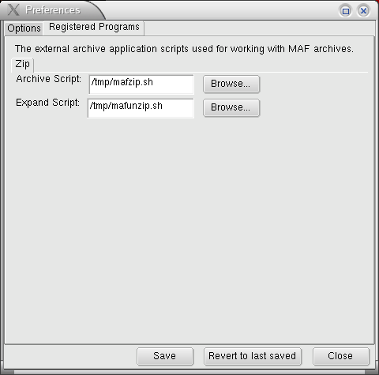
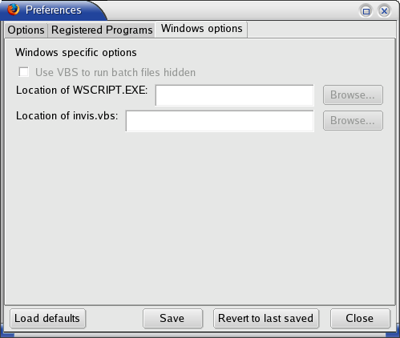

The preferences are available from the Tools menu and the Mozilla Archive Format submenu.
The additional available preferences for Windows are disabled on other platforms. The only preference like this thus far is the ability to execute a VBS script to hide the dos box that appears during batch file execution.
Below are screen shots of the preferences dialog on Linux. The new default temporary directory is in the user's profile. If you have installed a version of MAF older than 0.3.0 click the "Load defaults" button to set the preferences to the new defaults that use the new scripts. The variable %PROFILEDIR% refers to the folder that contains your browser's settings, such as history, cache, bookmarks etc. Remember to save after loading or the preferences will not be set. In Linux ensure that the temporary directory to use is set to %PROFILEDIR%/maf/maftemp/ to use the latest scripts or whatever temporary directory your script uses if you have changed or added scripts as seen in the figure below.

Also ensure (by selecting the registered programs tab) that the handler scripts for the archiving and expansion tasks are setup properly as seen in the figure below. The new defaults for the archive script location is set to %PROFILEDIR%/maf/mafzip.sh and the expansion script is set to %PROFILEDIR%/maf/mafunzip.sh.
The windows preference configuration is similar. The temporary directory to use would be %PROFILEDIR%\maf\maftemp\ and the scripts to use for archiving and expansion would be %PROFILEDIR%\maf\mafzip.bat and %PROFILEDIR%\maf\mafunzip.bat respectively.
If you are a windows user and wish to use the VBS option ENSURE that the script archive and expansion processes are working first. After that is confirmed (by saving to an archive and opening it back) you can safely enable the VBS option. Browse to the location of wscript.exe (usually in the %WINDIR%\system32 directory). You also must correctly set the location of invis.vbs which should be at %PROFILEDIR%\maf\invis.vbs.
Preferences: Clear Temporary folder when browser exits.
If there are open archives and somehow a user finds a way to crash the browser, the next time the browser closes, with this preference enabled, the entire temporary folder is removed and re-created. This feature is available from MAF version 0.3.0 and higher.
Preferences: Open Archive Mode
There are three open modes available. These configure how MAF behaves once an archive is opened.
Preferences: Rewrite Archive Document URLs
This feature is available from MAF version 0.2.20 and higher. With this preference enabled, the DOM tree of expanded archive HTML files would be processed as they finish loading in tabs. The processing would iterate over all the links in the page and replace absolute links to resources in the page with local resources in the archive (if possible). This would allow users to browse linked pages in an archive seamlessly.
Preferences: Save Extended Meta-Data
This feature is has been made available from MAF version 0.2.20 and higher. With this preference enabled, additional page information such as history, text zoom and scroll position is saved for each page. There is currently no preference to restore this saved information as yet.
Preferences: Enable MAF Protocol
This feature is has been made available from MAF version 0.4.0 and higher. With this preference enabled, users may access resources within maf archives with the maf:// protocol specification. The format of the MAF protocol is maf:// followed by a URI of a MAF file, followed by an exclamation mark, followed by the resource. As an example maf://file:///home/cottley/mafs/parse.html.maff!1092306423080_665/index.html indicates that the parse.html.maff file's resource 1092306423080_665/index.html is to be displayed. If the archive is not opened before this protocol is specified, it is opened silently in the background. Currently this protocol only works with file URIs.